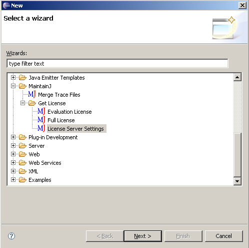

Instructions to obtain and install floating license
1. Download
FloatingServer.jar
2. Copy the file to the computer where you intend to run MaintainJ floating license
server. This computer should be accessible to the computers running MaintainJ
Eclipse plug-in. Please choose the server computer carefully because the license
will be locked to this computer (more precisely, to its host name).
3. Run java -jar FloatingServer.jar -HostKey . This will generate the
License Server Host Key and print to console.
4. Go to
download
license page. Enter the MaintainJ Key you received earlier and Host Key and
click 'Download License'. You can save the license file to your computer. The
license is emailed to you as well.
5. Type java -jar FloatingServer.jar 7773 <<AbsolutePathToLicenseFile>> to start the server. 7773 is
the port number, which you may change. Provide the absolute path to the license.lic file as the second argument. (Ex: c:\maintainj\license.lic)
6. The license server starts with the following messages to console:
MaintainJ floating license server starting on port:7773
Number of licenses allowed: <<Number of Licenses Purchased>>
7. Enter the license server name and port number in Eclipse following
File->New->Other->MaintainJ->Get License->License Server Settings.
Repeat this on each computer using MaintainJ plug-in.
